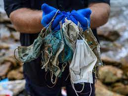
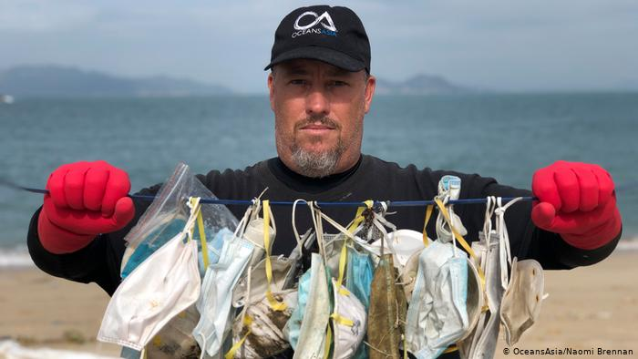
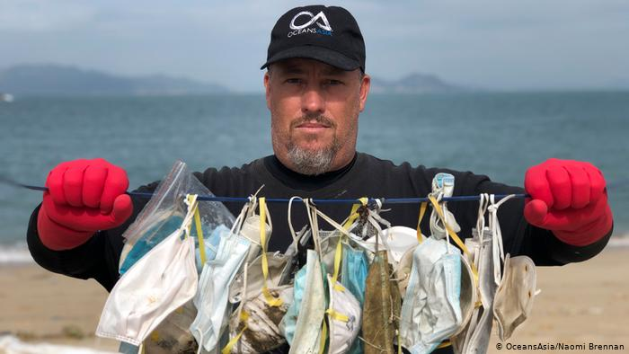
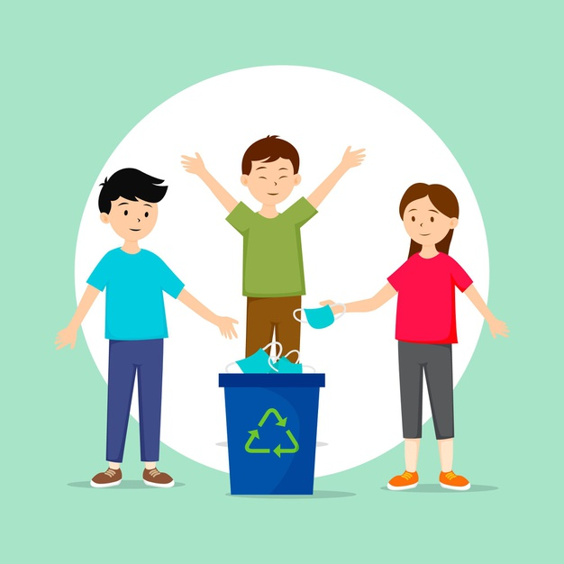
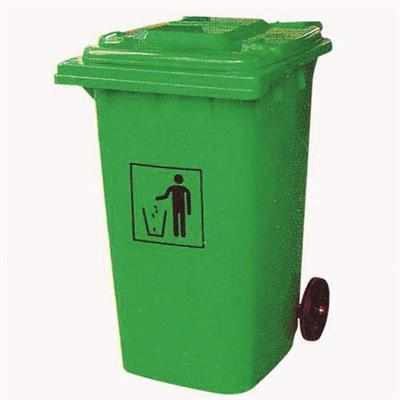

---Take A Look At Waste Generation Due To Pandemic---

 

One of the biggest issues we have right now is the huge amount of bio-medical waste that is generated because of the Covid-19 pandemic.
Woven Masks PPE kits, shoe covers, gloves are being used and thrown at the alarming rate. While cities have some form of waste management,
rural areas are absolutely lost.
Every year, 8 million tonnes of plastic waste from around the globe ends up in the oceans, with a bulk of it entering through the world's rivers.
According to statistics by the Environmental Protection Admistration, mostly general waste is thrown out by the public.
Till Jan 2021, India had generated 33,000 tonnes of Covid-19 related waste (source:Business Today)
However, one man is looking at solving this problem and providing a useful product that has multipurpose use across the country.
Select Your Role:

Donar

Municipal
Receiver